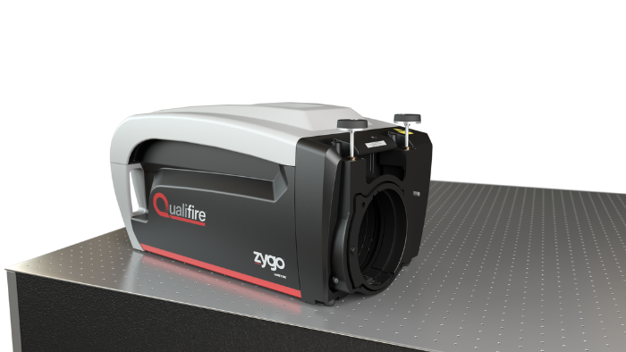
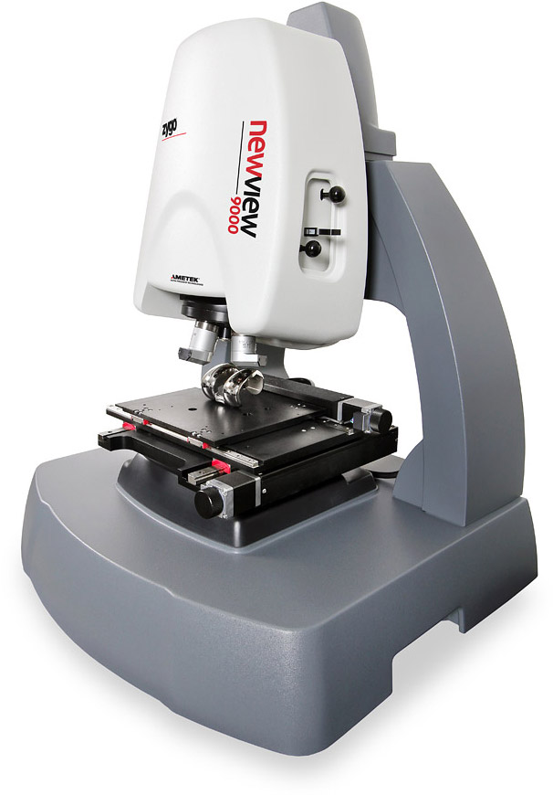
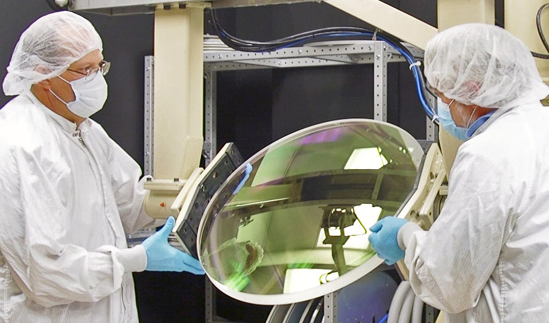
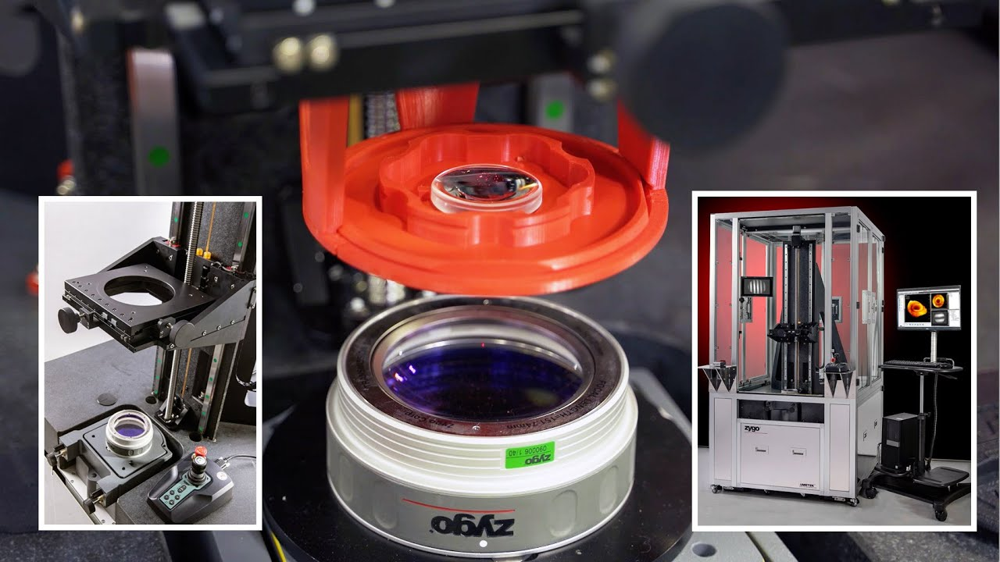
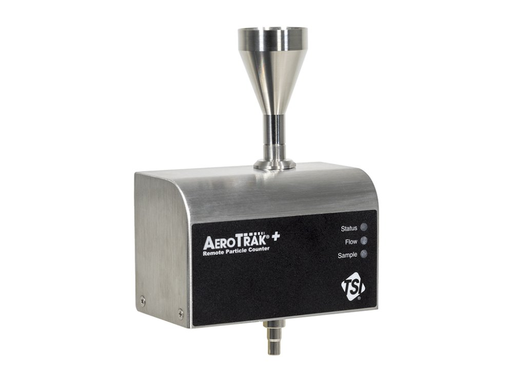
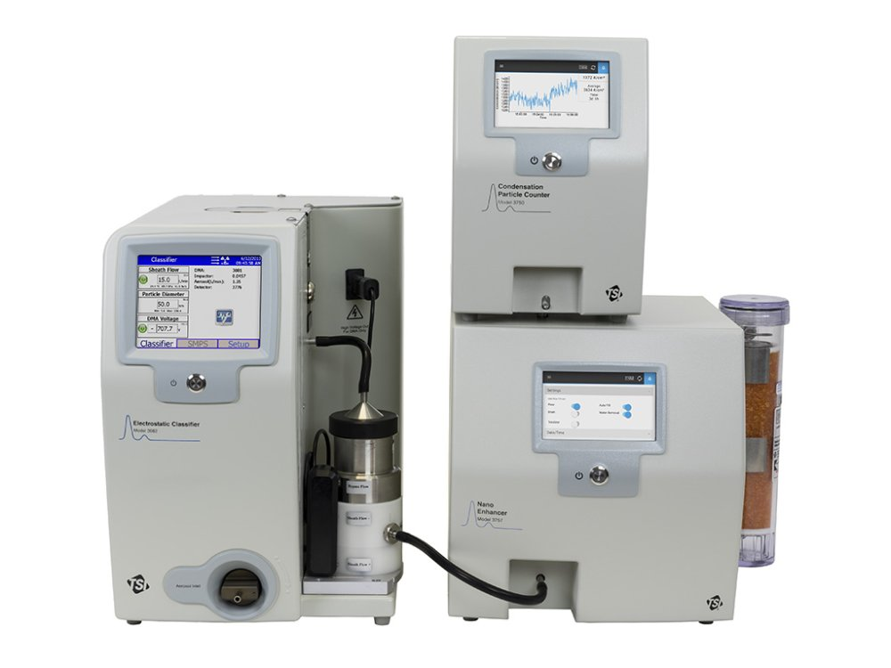
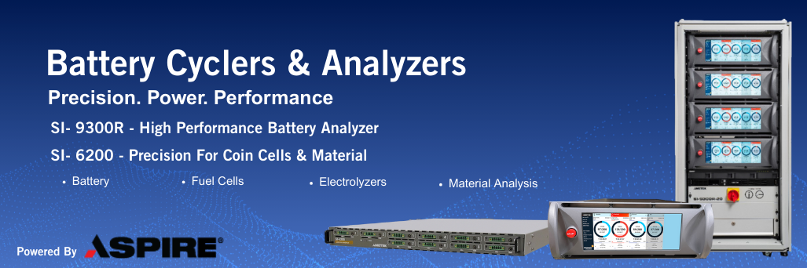

Interferometry and optical profiling, cleanroom and particle science, electrochemical analysis — one team to translate specifications into qualified workflows.
ZYGO Corporation was founded in 1970 and is headquartered in Middlefield, Connecticut, USA. For over five decades, ZYGO has been the global leader in precision optical metrology systems and ultra-precision optical components — setting the standard for measurement accuracy and reliability in the world's most demanding industries.
Yixi Technology is ZYGO’s China market promotion partner, delivering specification support, commissioning, training, and aftermarket coverage for ZYGO metrology across semiconductor, aerospace, research, pharma & controlled environments, new energy, and precision manufacturing — and can coordinate TSI and AMETEK solutions within the same engagement when projects span metrology, environmental monitoring, and electrochemistry.
The gold standard in precision optical surface metrology. Using phase-shifting interferometry, these instruments deliver unparalleled accuracy for flat, spherical, aspheric, and freeform optical surfaces.

Fast, non-contact 3D surface measurement with sub-nanometer vertical resolution using scanning white light interferometry. Used worldwide for surface roughness, step height, and topography analysis.

Ultra-precision optical components to the tightest tolerances — flat optics, precision coatings, aspheric and freeform surfaces for semiconductor lithography, space telescopes, and high-power laser systems.

Complete optical systems for semiconductor, aerospace, defense, and scientific research — fully tested, system-level solutions leveraging decades of optical engineering expertise.

Founded in 1961 and headquartered in Minnesota, USA, TSI supplies accurate instrumentation for particle counting, aerosols, flow, and related environmental monitoring. Its cleanroom portfolio is the benchmark for pharmaceutical, semiconductor, electronics, and research markets — aligned with ISO cleanroom standards and regulatory compliance.
Yixi Technology supports product selection and commercial coordination for TSI solutions in China. Learn more at tsi.com.
Continuous environmental monitoring for cleanrooms with reliable online particle detection integrating into facility monitoring strategies — aligned with ALCOA+ data integrity expectations. See TSI AeroTrak™+ focus page.

TSI SMPS spectrometers combine electrical mobility classification with condensation counting to resolve aerosol size distributions from nanometers upward — widely used in atmospheric science, engine emissions, materials aerosols, and filter testing. See TSI particle sizers.

AMETEK Scientific Instruments combines Princeton Applied Research and Solartron Analytical electrochemistry and impedance technologies into a single portfolio, delivering comprehensive test solutions from fundamental electrochemistry to battery R&D, corrosion, and materials characterization.
Applications span batteries & energy storage, hydrogen, catalysis, coatings, and physical electrochemistry. Official sites: Princeton Applied Research · Solartron Analytical.
Research-grade potentiostats/galvanostats, EIS and frequency-response analysis, multi-channel energy materials test systems, and battery cyclers for R&D through quality labs.
